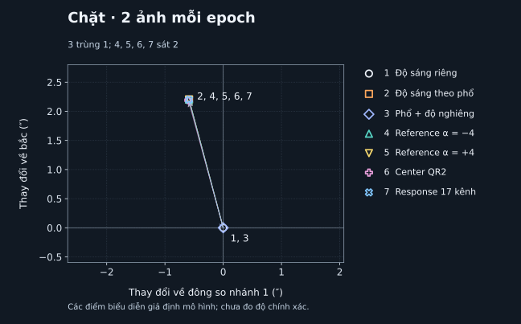

WISE 0855 / SPHERExTheo dấu
Minh họa nghệ thuật · CanvaTheo dấu
một thế giới
gần như vô hình.
Một sao lùn nâu rất lạnh. Hai lần nhìn bằng hồng ngoại. Cùng tìm điểm đổi vị trí giữa những ngôi sao.
Đối tượngWISE 0855−0714
Dữ liệu thậtNASA / IPAC IRSA
Giữa hai lần chụp163,5 ngày
Trạng tháiPhép đo SPHEREx thử nghiệm
So ảnh
Tìm chấm sáng đổi vị trí.
Xem bằng chứng
Kiểm tra những gì phép đo còn chưa chắc.
Ghi nhận
Điều bạn thấy giúp lần kiểm tra tiếp theo.
Khám phá dữ liệu thật
Quan sát · chưa đo chuyển độngChọn vùng trời của bạn.
Nhập tọa độ hoặc chọn mục tiêu mẫu, rồi tìm các lần quan sát.
Ảnh đặt cùng lưới WCS, chưa căn chỉnh theo sao hay ghép phổ tại nguồn. Đổi độ sáng hoặc hình dạng có thể do bước sóng, PSF và noise. Tâm mẫu WISE/Barnard dự báo cho năm 2026; Epsilon Indi B dùng khung rộng quanh tọa độ ESO lịch sử. Đây là hướng dẫn tìm vùng, chưa phải vị trí đo tại epoch ảnh.
01 / Quan sát
Bạn có thấy điểm đổi chỗ?
Ước lượng thử nghiệm · chưa hiệu chuẩn
Đang tải ảnh thật từ SPHEREx…
Đối chứng mới trên cùng ảnh strict có nghiệm vị trí cạnh tranh ở epoch sau. Phép đo dưới đây giữ theo bản cũ, chưa có sai số hiệu chuẩn. Xem hiệu chỉnh PSF & sai số chung →
Ảnh quan sát thật
Hướng bắc ở trên · hướng đông bên tráiKhoảng thời gian—
Bước sóng tại mục tiêu—
RMS sao nền sau căn chỉnh—
Kéo vạch qua chấm được đánh dấu để so vị trí trước và sau.
TrướcKéo vạch để so sánhSau
Di chuột trên ảnh để xem giá trị6,15″ / pixel gốc · khung 6,56′
Sau
Hai ảnh dùng cùng mức kéo sáng. Vòng nét đứt là dự báo từ astrometry cũ, không phải phát hiện của model.
Ảnh đơn & cấu hình đối chiếu
Phép đo chuyển động & mức rõ của tín hiệu
Cộng ảnh theo epoch
Dịch chuyển · sai số mô hình
—
Sai số 1σ theo mô hình có điều kiện; chưa bao phủ mọi sai số hệ thống.
S/N khẩu độ
| Epoch | Ảnh đơn tốt nhất | Ảnh cộng |
|---|
S/N khẩu độ tại vị trí đã fit; có truyền covariance do nội suy. Không phải độ tin cậy phát hiện mù.
● Ước lượng cũ · ellipse chưa hiệu chuẩn ◇ Dự báo ngoài
Kiểm chứng hiện tại · 0.10
Goal đang thực hiện · chưa đạt khoa họcĐo đúng trước khi kết luận.
Đã mở truy vấn tọa độ và kiểm tra ảnh thật của năm mục tiêu. Phép đo chuyển động vẫn đang được kiểm định; mọi số đo WISE mặc định là kết quả có điều kiện.
WISE 0855 · đối chứng trên dữ liệu đã mởĐổi mô hình,
Đổi mô hình,
vector đổi bao nhiêu?
Mỗi mô hình ước lượng vị trí từ cùng pixel. So độ đổi giữa hai lần chụp giúp biết kết quả nhạy đến đâu với giả định về độ sáng và bước sóng.
Đang tải 28 phép tính vị trí…

| Giả định mô hình | Đông (″) | Bắc (″) | Đổi so độ sáng riêng (″) | Đợt qua kiểm tra số học /2 |
|---|
Vì sao hai nghiệm khiến sai số chưa đáng tin?
Ở epoch sau của bộ ảnh chặt, hai vị trí khác nhau có chi phí fit gần nhau. Covariance quanh một vị trí không mô tả được sự phân vân giữa cả hai. Đây là các nghiệm của mô hình, chưa xác định là hai nguồn thiên văn.
Đang tải tóm tắt chẩn đoán tại các nghiệm đã lưu.
| Exposure | Δχ² · độ sáng riêng | Δχ² · độ sáng theo phổ |
|---|
Δχ² là chi phí tại nghiệm cạnh tranh trừ nghiệm tốt nhất trong từng nhánh. Các phần có dấu trái nhau; ở nhánh phổ, hai ảnh cùng xác định một biên độ nên không phải hai phép đo độc lập.
Mỗi ảnh có ba template nguồn nền cố định. Ở nghiệm gần một template catalog hơn, tỷ lệ thông tin nguồn còn lại sau phép chiếu thấp hơn. Quan hệ này phù hợp về hình học; cần phép thử can thiệp để xác định nguyên nhân. IRSA cho phép dùng ePSF mới với ảnh QR2 cũ; residual và bias trên WISE, biến thiên phổ, diện tích pixel calibration và sai số căn chỉnh chung vẫn cần kiểm chứng.
Phương pháp và phạm vi được kiểm tra
Protocol khóa ở cfb9d6a trước khi chạy: 2 bộ ảnh × 7 nhánh × 2 epoch. Bộ chặt là tập con của bộ rộng; toàn bộ dùng 20 exposure đã mở. Renderer chuẩn hóa ePSF trước mask, dùng WCS nguồn và diện tích góc pixel có đơn vị. PRISM và response lab R7 chỉ tạo ràng buộc phổ có điều kiện; quy ước màu calibration chính thức vẫn chưa xác minh.
Đủ các lượt lỗi và lý do từ chối được giữ trong JSON. Kiểm tra solver chỉ xét hội tụ, biên, rank và nghiệm cạnh tranh. Covariance có điều kiện bỏ qua các hệ thống chung, chưa có mức phủ hiệu chuẩn; chưa đổi estimator mặc định hoặc mở 30 trường mới.

Tách thử nguồn chồng, nền và ePSF · 288 lượt
Development · giữ mọi lượt thửRàng buộc nguồn lân cận
Ràng buộc nguồn lân cận
có giúp định vị?
Thay độ cong nền, cách nội suy ePSF (hình một điểm sáng qua máy quan sát) và ràng buộc độ sáng hàng xóm. Độ sáng mục tiêu vẫn được fit có dấu; nghiệm âm cũng được giữ trong báo cáo. Đây chưa phải tìm kiếm mù hoặc xác nhận phát hiện.
Mở mục này để tải kết quả và các lý do từ chối.
Cảnh báo từ đối chứng: một lượt qua sàng lọc số vẫn lệch 16,8″ so vị trí mô phỏng. “Qua số học” chưa xác nhận đo đúng nguồn.
1. Ảnh thật cho biết độ nhạy mô hình
| Nền | ePSF | Độ sáng hàng xóm | Đông / Bắc (″) | Đổi so nhánh 1 (″) | Sàng lọc số · từng đợt |
|---|
2. Mô phỏng có vị trí đúng để so sai lệch
Gaussian tích phân theo pixel tạo hình nguồn khác family ePSF của fitter. Cùng geometry và cùng noise được đưa vào hai nhánh plane/nearest; chỉ thay ràng buộc độ sáng hàng xóm.
| Truth tổng hợp | Cặp có dấu /16 | Cặp không âm /16 | RMS có dấu / không âm (″) | P90 có dấu / không âm (″) |
|---|
Giới hạn của đối chứng và bước tiếp theo
64 draw chỉ dùng một geometry đã mở. Nền Gaussian dùng VARIANCE gốc làm thang noise; variance đó có thể đã gồm photon noise nguồn thật. Source-Poisson mới là ramp lý tưởng theo gain/timing có điều kiện, chưa tách sạch ngân sách noise detector.
Fitter nhận phương sai nguồn oracle từ truth của control, chưa phải cách ước lượng sai số trên dữ liệu chưa biết nguồn. PSF Gaussian không phải đo PSF SPHEREx. Chưa có covariance, coverage hiệu chuẩn, time model theo từng ảnh hay uncertainty căn chỉnh chung. Không chọn mô hình từ pilot này để thay mặc định.
Bước tiếp: kiểm nguồn lân cận/ePSF trên sao thật giữ ngoài xây PSF, nối chuyển động theo từng exposure và lượng hóa bias trước hiệu chuẩn. Evaluator, miền hỗ trợ, gate và overlap phải khóa trước 12 trường calibration, 12 validation và 6 holdout cuối.

Kiểm nghiệm mới · sao thật và khả năng nhận nguồn
Kiểm tra vị trí.
Kiểm tra cả khi không có mục tiêu.
Mở báo cáo để xem hai phép thử đã khóa cấu hình.
Vị trí đo được lệch bao nhiêu so với Gaia?
| Mẫu điểm sáng | Sao × ảnh /420 | RMS (″) | Trung vị (″) | P90 (″) |
|---|
Xem đủ 21 sao và các ca không đo được
| Gaia source ID | Số ảnh · từng nhánh /20 | RMS gần nhất / nội suy (″) |
|---|
Đọc các con số này thế nào?
Gaia cung cấp vị trí sao tham chiếu. RMS nhạy với sai lệch lớn; trung vị mô tả điểm giữa; P90 là mức mà 90% sai lệch nằm dưới. ePSF là mẫu hình của một điểm sáng qua thiết bị. Nội suy mẫu không tự chứng minh vị trí chính xác hơn.
Đủ 840 lượt = 21 sao × 20 ảnh × 2 ePSF. Sao đang đo được loại khỏi nghiệm căn chỉnh của chính nó. Tập sao đã được chọn từ ảnh trước đây; căn chỉnh và calibration phía NASA vẫn có thể dùng chung dữ liệu. Đây chưa phải độ chính xác trên trường trời độc lập.
Phép thử có báo nhầm khi mục tiêu vắng mặt không?
Ngưỡng đã khóa: —. Đây là điểm số tìm nguồn, không phải mức sigma hay xác suất phát hiện.
| Cảnh mô phỏng | Tính được /999 | Được chấp nhận /999 | Lỗi | Cận bảo thủ | Điều kiện đã khóa |
|---|
Giới hạn và điều kiện đã khóa
Hai ca không có mục tiêu phải đạt cận báo nhầm ≤1%. Hai ca sáng 600 µJy phải đạt cận thu hồi ≥80%; mức 300 µJy chỉ báo cáo. Cả hai ePSF và lưới tìm 441 vị trí được tính chung khi học ngưỡng. Cấu hình và ngưỡng đã ghi vào Git trước lượt kiểm tra riêng.
Tất cả mô phỏng dùng một hình học ảnh đã mở, nguồn Gaussian và noise có điều kiện. Trọng số dùng VARIANCE quan sát; không dùng sai số nguồn từ truth. Nguồn lân cận vẫn có mặt trong ca không có mục tiêu. Kết quả không thay thế kiểm định trên bầu trời thật hoặc hiệu chuẩn sai số chuyển động.
Tiếp theo: kiểm chứng hiệu chỉnh ePSF và sai số chung.
Cần tập học riêng, kiểm tra tín hiệu còn giữ được và covariance căn chỉnh trước khi mở 12 trường calibration, 12 validation và 6 holdout.
Xem hiệu chỉnh PSF & sai số chung →Hiệu chỉnh mới · hình điểm sáng và sai số chung
Mô hình tốt hơn có đo đúng hơn?
Mở báo cáo để xem kết quả đã khóa và bước kiểm chứng tiếp theo.
- 1. Học mẫu điểm sáng—
- 2. Kiểm tra calibration—
- 3. So trên phần dành riêng—
Trước và sau · cùng các cặp đo được
| Chỉ số | Mẫu cũ | Mẫu hiệu chỉnh |
|---|
Xem đủ 7 sao dành riêng
| Gaia source ID | Cặp /8 | Trung bình cũ | Hiệu chỉnh | Trạng thái |
|---|
Vì sao gate calibration dừng?
| Gaia source ID | Exposure | Nghiệm gần tốt nhất · cũ → mới | Cách nhau lớn nhất · mới |
|---|
Sai số chung giữa các sao đã được tính đến chưa?
Xem từng sao và các giả định sai số
| Gaia source ID | Ảnh /20 | Chi² / bậc tự do |
|---|
Pixel dùng chung và sai số Gaia theo thời gian được giữ trong ma trận. Trọng số, đăng ký cũ và tọa độ nguồn chồng vẫn được giữ cố định; ảnh hưởng nhiễu của các bước này còn thiếu. Giá trị trên chưa phải tổng sai số của phép đo.
PSF là gì? Hệ số và giới hạn
PSF là hình một điểm sáng tạo ra trên ảnh. Chỉnh hình này có thể đổi vị trí đo được. Ở đây, hệ số được học từ sao riêng rồi khóa trước phép thử vị trí; tâm và tổng tín hiệu được giữ theo quy ước số học.
| Hệ số | Giá trị | Đơn vị | Sai số có điều kiện |
|---|
Tất cả sao và ảnh đã được mở trong các bước phát triển trước. Chưa kiểm chứng giữ tín hiệu, bias nguồn chồng hoặc báo nhầm trên bầu trời mới. Ngưỡng nhận nguồn cũ chưa được hiệu chuẩn lại cho PSF hiệu chỉnh.
Tiếp theo: giữ tín hiệu và đo đủ sai số.
Kiểm tra phụ thuộc nền, pha pixel, nguồn chồng và đăng ký chung trước khi khóa evaluator cho 12 trường calibration, 12 validation và 6 holdout còn chưa mở.
Trở lại ảnh WISE 0855 →Năm mục tiêu trong đề bài
Chẩn đoán trên các trường đã mở
Giữ nguyên phép đo 0.9 để tái hiện lỗi, bỏ từng exposure và thử nguồn giả trên noise Gaussian mới. Mô hình nhiều tham số chưa giải quyết đồng đều sai lệch; chưa xác định nguyên nhân vật lý của w350.
| Trường | Ca kiểm tra | Sai lệch trên ảnh gốc | RMS · noise Gaussian | Ellipse thô 68% · noise Gaussian | Bỏ một exposure · đổi vector lớn nhất |
|---|
Đang tải báo cáo chẩn đoán.
Thử sửa biên ePSF · ổn định số, chưa tăng độ chính xác
Đang tải đối chứng ePSF. Đây là thí nghiệm phát triển trên các trường đã mở.
| Trường | S/N mỗi ảnh | RMS cũ → mới | Ellipse GN cũ 68% | Ellipse profile mới 68% | Cùng đạt quality gate |
|---|
Cùng 64 lượt noise mỗi hàng; GN và profile là hai cách ước lượng covariance. S/N 2 đứng yên, S/N 4 có dịch chuyển. Thí nghiệm chưa tách riêng hai yếu tố này, chưa thêm shot noise của nguồn và chưa kiểm định PSF vật lý.
Từng lượt, covariance & hash ↓ · Báo cáo đối chứng ↗Đối chứng tại vị trí nguồn giả đã biết: ở S/N 2, thông tin Gauss–Newton lớn gấp 1,48–1,56 lần chuẩn Fisher trong mô phỏng khớp template. Đây chưa phải độ phủ của centroid fit. Cơ chế, giới hạn & phép thử tiếp theo ↗ · Toàn bộ đối chứng ↓
Vùng sai số còn quá nhỏ.
Vùng ghi “68%” cần chứa đúng vector chuyển động trong khoảng 68% lượt thử. Với nguồn mờ, cách tính mới chỉ đạt 51–57% trên ba trường đã mở. Chưa thay phép đo WISE 0855.
So ba cách tính sai số · 768 lượt mô phỏng
Cùng vị trí fit, so Gauss–Newton (GN), Hessian profile (H) và sandwich theo từng ảnh. Mỗi ca có 128 lượt nhiễu mới; chỉ có ba vùng trời, chưa phải kiểm định độc lập.
Mở để tải kết quả.
| Trường | S/N mỗi ảnh | GN | H | Sandwich | Diện tích 68% GN / H / sandwich (″²) | RMS lỗi vector (″) |
|---|
Covariance mới chưa bao gồm đầy đủ thay đổi trọng số robust, lỗi sao tham chiếu hay PSF vật lý. Nguồn S/N 2 đứng yên, S/N 4 có chuyển động; hai ca không tách riêng tác động độ sáng. Kết quả và giới hạn ↗
Bước tiếp: khóa giao thức cho 12 trường calibration, 12 validation và 6 holdout cuối. Mới chọn tọa độ, chưa đo. Xem kế hoạch 30 trường ↗ · Danh sách & hash ↓ · Audit thời gian từng ảnh ↗
Kiểm tra chất lượng pixel · mask và gain
Bản hiển thị mới loại vùng FULLSAMPLE. Trong 31 cutout WISE đã kiểm tra không có pixel mang cờ này. Audit gain tìm thấy một pixel gain âm chưa có flag, ngoài vùng prior ±5 pixel; chưa đo lại vector hoặc xác định ảnh hưởng khoa học.
Đơn vị, UUID và hash gain đã đối chiếu; orientation vẫn là suy luận từ các snapshot pipeline công khai. Chưa dùng audit này để chứng nhận độ chính xác.
Chẩn đoán, từng lượt & hash ↓Năm mục tiêu, URL & hash ↓20 tiêu chí nghiệm thu ↗Mở lịch sử thí nghiệm ↓
Phổ JWST độc lập · kiểm tra trước khi ghép ảnh
Cùng nhìn một ngôi sao qua các dải màu hồng ngoại khác nhau có thể cho độ sáng khác nhau. Đã tải phổ JWST/NIRSpec thật của WISE 0855 và đáp ứng phòng thí nghiệm SPHEREx R7 để kiểm tra điều này.
102/102 cấu hình tính được, 0/102 đủ toàn dải. Phổ JWST còn thiếu hỗ trợ ở cuối dải. Phần trọng số thiếu 0,014–0,159% không phải tỷ lệ sai số thông lượng. Chưa dùng kết quả này để sửa vị trí hoặc giảm sai số công bố.
Phổ PRISM bổ sung có mẫu hợp lệ kẹp đoạn thiếu. Đối chứng flux mới dùng riêng PRISM cho từng ảnh WISE; không ghép hai phổ hay tính lại bộ 102 cấu hình G395M. Khác biệt độ phân giải và chuẩn màu calibration vẫn chưa được kiểm chứng.
Nguồn PRISM bổ sung ↓Thí nghiệm đã công bố · 0.5–0.9
Các kết quả dưới đây được giữ theo phiên bản và thời điểm công bố. Trường đã mở được dùng cho phát triển tiếp theo, không còn là holdout mới.
02 / Kiểm chứngThấy thay đổi chưa đủ
Đang tải kiểm chứngThấy thay đổi chưa đủ
để kết luận.
Ảnh mờ, nguồn chồng nhau hoặc cách xử lý có thể làm một chấm sáng trông như đã di chuyển. Chúng tôi tiêm nguồn có vị trí biết trước vào nền ảnh thật để đo mức sai lệch.
30vùng mới đã khóa trước phép thử
—nguồn hồng ngoại đạt điều kiện
0cặp QR3 cùng exposure hiện có
QR3 chưa phủ tọa độ này trong truy vấn SIA và TAP. Phép thử bên dưới dùng QR2.
| Mô hình thử | Độ sáng | Sai lệch ghép cặp cũ / mới | Cặp hợp lệ | Fit cũ / mới | RMS mọi fit mới | Trong vùng sai số 68% |
|---|
Xem 30 vị trí kiểm thử trên ảnh thật

Vòng cam là vị trí kiểm thử, không phải các thiên thể được phát hiện.
Căn chỉnh theo sao Gaia DR3
Kiểm chứng Gaia DR3
● Căn chỉnh ● Giữ ngoài fit + WISE 0855 · Bắc ↑ / Đông ←
| Cấu hình | RMS sao giữ lại | Đổi tập sao | Bỏ 1 sao, lớn nhất | Thử affine |
|---|
Các độ thay đổi vector tính bằng arcsec. Sao giữ lại không tham gia fit căn chỉnh cục bộ; Gaia cũng đã góp phần vào WCS đầu vào của SPHEREx.
Ngân sách sai số của vector
Chiếu covariance theo hướng vector rồi cộng theo bình phương. Hạng giữ lại có thể đếm một phần noise hai lần; các sai số ePSF và blending vẫn chưa được mô phỏng đầy đủ.
Nguồn giả trên nền thật: giới hạn còn lại
| Độ sáng × WISE | Loại nguồn | Trong ellipse 68% | RMS sai lệch |
|---|
8 vị trí cố định, hai độ sáng, hai kiểu chuyển động. Dùng chung nền ảnh và ePSF để tiêm/fit, chưa thêm shot noise; đây là chẩn đoán có tương quan, chưa phải hiệu chuẩn completeness hay false-positive rate.
Đối chiếu thí nghiệm 0.4.0 trước đó
Fit nhiều nguồn · thử nghiệm
Chưa đạt tiêu chí thay mặc định| Phổ | Độ sáng | RMS một nguồn | RMS nhiều nguồn | Hợp lệ: một / nhiều | Trong ellipse 68%: một / nhiều |
|---|
Dữ liệu kiểm tra mới · 0.6.0
Đo tại vị trí đã biếtCó ổn ở trường sao khác?
Ba trường SPHEREx mới. Sao Gaia giữ ngoài bước căn chỉnh kiểm tra độ lệch vị trí; nguồn giả trên nền ảnh thật kiểm tra khả năng phục hồi.
| Trường sao | Sao Gaia đo được / thử | Lệch Gaia RMS | Lệch Gaia P90 | Nguồn giả fit được / thử | Nguồn giả trong 1 pixel / thử | Trong ellipse 68% / thử |
|---|
RMS và P90 nhỏ hơn là tốt hơn. 1 pixel = 6,15″. Nguồn giả gồm hai mức sáng và cả đứng yên/dịch chuyển; ellipse chỉ tính nhiễu đo và sai số căn chỉnh theo mô hình.
Cách đọc và giới hạn
RMS đo sai lệch vector giữa hai epoch so với Gaia, không phải độ lệch vị trí tuyệt đối. P90 là mức mà 90% các fit hợp lệ có sai lệch thấp hơn. Cột số fit giữ lại toàn bộ lượt thử; RMS chỉ tính các fit hợp lệ.
Đây là fit quanh vị trí đã biết. Phép thử chưa đo precision/recall của tìm kiếm mù trên toàn bầu trời. Nguồn giả dùng cùng họ ePSF với mô hình, chưa thêm shot noise; các vùng trong một trường chia sẻ ảnh và không độc lập. Hai cấu hình ở Barnard dùng cùng cặp ảnh, không phải hai kiểm chứng độc lập. Ellipse chưa bao gồm toàn bộ bias nền ảnh/ePSF, và không được hiệu chuẩn lại bằng sao giữ ngoài.
Đối chứng Barnard dùng chuyển động Gaia, vận tốc xuyên tâm từ SIMBAD và thị sai để tạo dự báo độc lập với fit ảnh. Sai số mô hình dự báo và saturation còn cần kiểm tra. Số đo WISE 0855 đang hiển thị được giữ nguyên.
Quality gate · 0.7.0
Đang tải kiểm chứngHội tụ chưa có nghĩa là đúng.
Thêm nguồn hồng ngoại lân cận vào mô hình, giảm ảnh hưởng pixel outlier và kiểm tra residual trước khi diễn giải chuyển động.
Đang tải cấu hình đã khóa.
| Trường mới | Hội tụ cũ / mới | RMS trước gate cũ → mới | Qua gate cũ / mới | RMS cùng qua gate cũ → mới | Kết luận cả trường |
|---|
Cũ/mới: fit một nguồn / IR + Huber, dùng cùng bộ gate. RMS chỉ so các lượt chung để thấy thay đổi của phép đo. Số lượt hội tụ và qua gate giữ toàn bộ mẫu số; giảm RMS bằng cách bỏ mẫu khó không đủ để đạt tiêu chí.
Gate chặn những gì?
Gate kiểm tra solver, biên nghiệm, tín hiệu, χ², residual lõi, pixel hợp lệ và thông tin biên độ còn lại sau khi tách nguồn chồng. Căn chỉnh cần ít nhất 4 sao qua gate outlier. Ngưỡng được khóa trước lượt đánh giá; không dùng sai lệch so với truth để quyết định nhận một phép đo.
Phép thử dùng phổ rộng, fit quanh vị trí biết trước. Nguồn giả dùng cả ePSF gốc và ePSF làm rộng giả định; chưa thêm shot noise. Covariance còn thiếu các hệ thống chung. Qua gate chưa đồng nghĩa đã phát hiện chuyển động, và không tự thay số đo WISE 0855.
Điều đã học từ các trường cũ
Đây là dữ liệu phát triển đã mở; kết quả này không được tính như kiểm chứng mới.
Hiệu chuẩn sai số · 0.8.0Vùng sai số có bao phủ
Đang tải kiểm chứngVùng sai số có bao phủ
sai lệch thật?
Nguồn giả có vị trí biết trước giúp kiểm tra phép đo. Ellipse lớn hơn có thể bao phủ nhiều sai lệch hơn; vị trí đo vẫn cần một kiểm tra riêng.
Đang tải cấu hình đã khóa.
Ba tập dữ liệu được tách như thế nào?
- Phát triển · Barnard, RW Aur
Dữ liệu đã mở. Kiểm tra nền bậc hai và độ rộng ePSF; không dùng làm kiểm chứng mới.
- Hiệu chuẩn · q030, q180, q300
Đang tải.
Các trường đã dùng ở bản 0.7. Chỉ tập này được dùng học hệ số sai số.
- Kiểm định · v060, v150, v330
Đang tải.
Trường và exposure tách khỏi hai tập trước. Có thêm hình nguồn elip chưa dùng để hiệu chuẩn.
| Trường mới | Fit được cũ / mới | RMS cũ → mới | Qua gate cũ / mới | Bias mới Đông / Bắc | Phủ 68% thô → hiệu chuẩn | Diện tích · trung vị | Gate cả trường |
|---|
Cũ / mới: IR + Huber 0.7 / nền bậc hai + ePSF linh hoạt 0.8. RMS so các fit hội tụ chung. Bias, tỷ lệ phủ và diện tích chỉ tính mẫu mới qua gate; số lượt thử được giữ đầy đủ.
Cách đọc kết quả và giới hạn
RMS nhỏ hơn nghĩa là vector ít sai lệch hơn so với truth. Bias là vector sai lệch trung bình, không phải chuyển động của một thiên thể. Phủ 68% nghĩa là có bao nhiêu vector đúng nằm trong ellipse được dự báo. Diện tích tăng nhiều đồng nghĩa độ chính xác công bố phải thấp hơn.
Hệ số hiệu chuẩn không thay vị trí đo và không dùng kết quả kiểm định. Đây là hiệu chuẩn thực nghiệm: các nguồn giả chia sẻ nền ảnh và exposure, chỉ có ba trường kiểm định, nên không có bảo đảm xác suất cho mọi vùng trời. Bootstrap theo trường/vùng nền vẫn là chẩn đoán ít mẫu.
Phổ rộng; fit quanh vị trí biết trước; chưa thêm shot noise của nguồn tiêm. Hình nguồn nhiễu là giả định, chưa phải ePSF đo độc lập. Hàng xóm giữ hình dạng và vị trí cố định; covariance theo Hessian khi độ rộng chạm biên còn xấp xỉ. Chưa chạy hiệu chuẩn này lên WISE 0855 và chưa xác nhận chuyển động.
Tách thử nền / ePSF · 0.9.0Thêm tham số có giúp
Đang tải kiểm chứngThêm tham số có giúp
đo đúng hơn?
Bốn tổ hợp nhận cùng ảnh và căn chỉnh. Chọn mô hình theo sai lệch vị trí trước, rồi hiệu chuẩn vùng sai số theo độ rõ của nguồn và độ gồ ghề nền.
Đang tải cấu hình đã khóa.
—
| Tổ hợp | Fit được / thử | RMS baseline → tổ hợp | P90 baseline → tổ hợp | Qua gate / thử | Bias Đông / Bắc · qua gate | Nhóm đạt tiêu chí |
|---|
RMS/P90 so các fit hội tụ chung với nền phẳng + ePSF cố định. Nhóm đạt còn yêu cầu RMS/P90 sau gate không tăng và không mất thêm fit. Đây là dữ liệu phát triển đã mở, không phải kiểm chứng ngoài mới.
2. Hiệu chuẩn theo S/N và nền như thế nào?
Ba trường calibration tách khỏi trường chọn mô hình. Các vùng nền chỉ số chẵn học error floor; vùng lẻ học mức cộng floor và scale. Nhóm ít mẫu gộp về nhóm lớn hơn. Các vùng vẫn chia sẻ exposure, nên chưa có bảo đảm tỷ lệ phủ cho mọi vùng trời.
Chỉ dùng S/N đo từ fit và đặc trưng nền đo trên pixel gốc đã che mục tiêu/hàng xóm để chọn nhóm. Không dùng S/N nguồn tiêm hoặc sai lệch so với truth. Miền hỗ trợ dùng min–max của nhóm tham số với dung sai nhân 1,25. Ngoài miền này thì không cấp covariance hiệu chuẩn.
| Nhóm đặc trưng đo được | Trong miền / qua gate | Phủ 68% · chung | Phủ 68% · theo nhóm | Diện tích trung vị · chung → nhóm | Dùng hệ số gộp / hỗ trợ |
|---|
| Trường kiểm định | Qua gate / thử | RMS / P90 · qua gate | Trong miền / qua gate | Phủ 68% chung → nhóm | Diện tích trung vị chung → nhóm |
|---|
Vùng kiểm thử cần người xem lại
Đọc kết quả và giới hạn
Nền phẳng là một mặt phẳng nghiêng bậc một; nền bậc hai thêm độ cong. ePSF mô tả hình của một điểm sáng khi máy chụp ghi nhận; bản linh hoạt cho phép làm rộng có giới hạn. Thêm tham số có thể hấp thụ nguồn chồng hoặc noise và làm vị trí kém ổn định.
Độ phủ 68% là tỷ lệ vector đúng nằm trong ellipse dự báo. Hiệu chuẩn không thay centroid và không trừ bias theo truth. Hai cách chung/theo nhóm dùng cùng point model và tập calibration; chỉ so trên cùng miền được hỗ trợ. Các trường ngoài miền được giữ trong mẫu số và báo từ chối.
Phép thử quanh vị trí biết trước, dùng phổ rộng, hình nguồn giả định và chưa thêm shot noise của nguồn tiêm. Hàng xóm giữ hình dạng/vị trí cố định, các sai số nền/ePSF chung chưa được propagate đầy đủ. Bốn nhóm vẫn ít trường độc lập; tỷ lệ phủ không phải xác suất đã phát hiện một thiên thể. WISE 0855 chưa dùng phương pháp mới và chưa được xác nhận chuyển động.